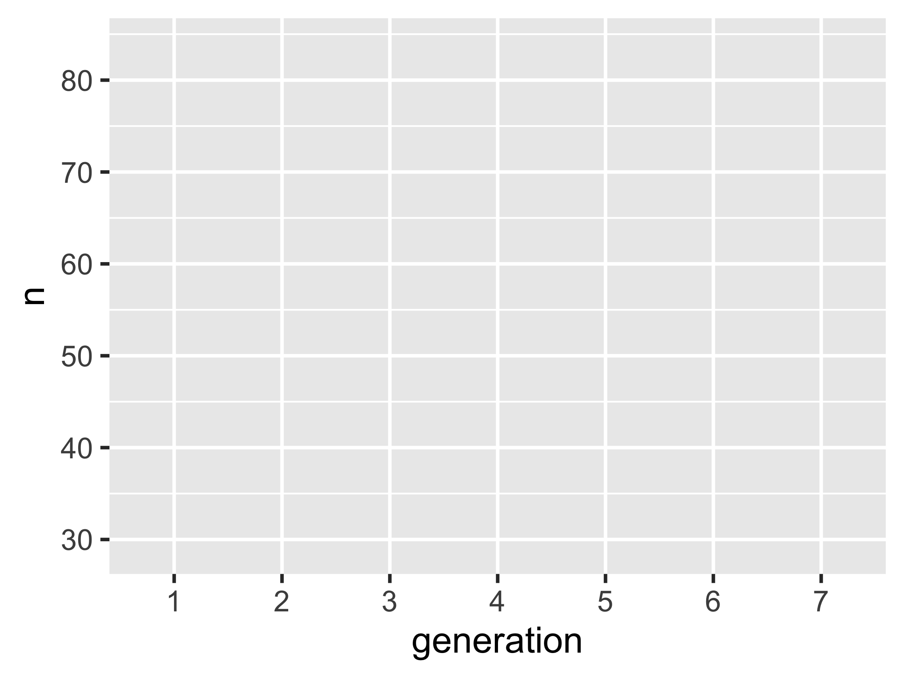
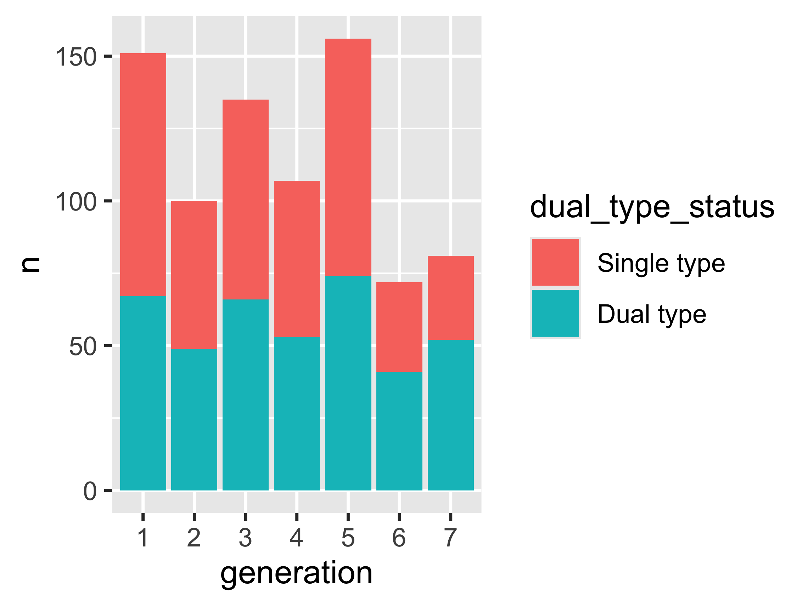
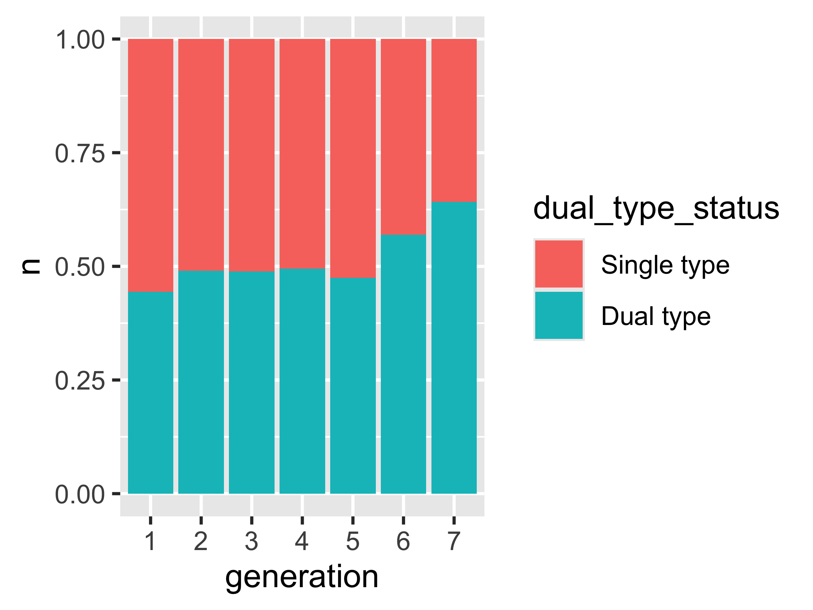
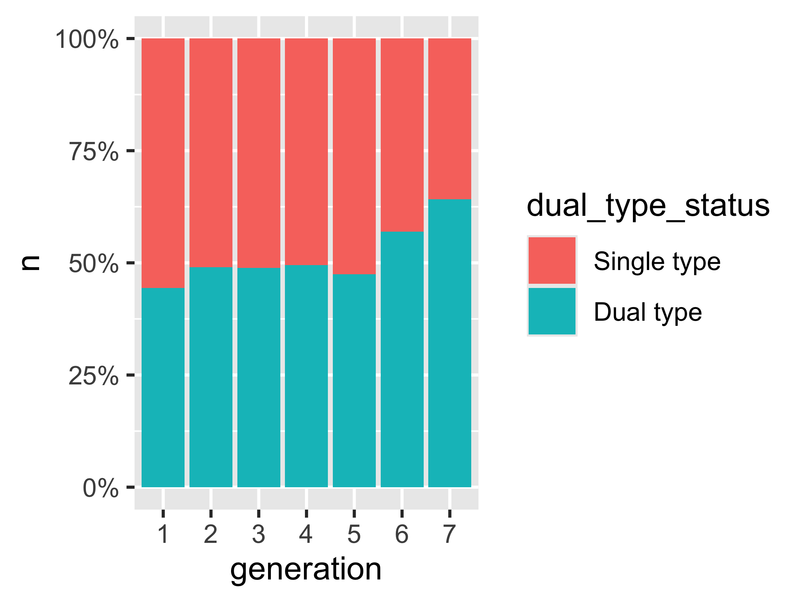
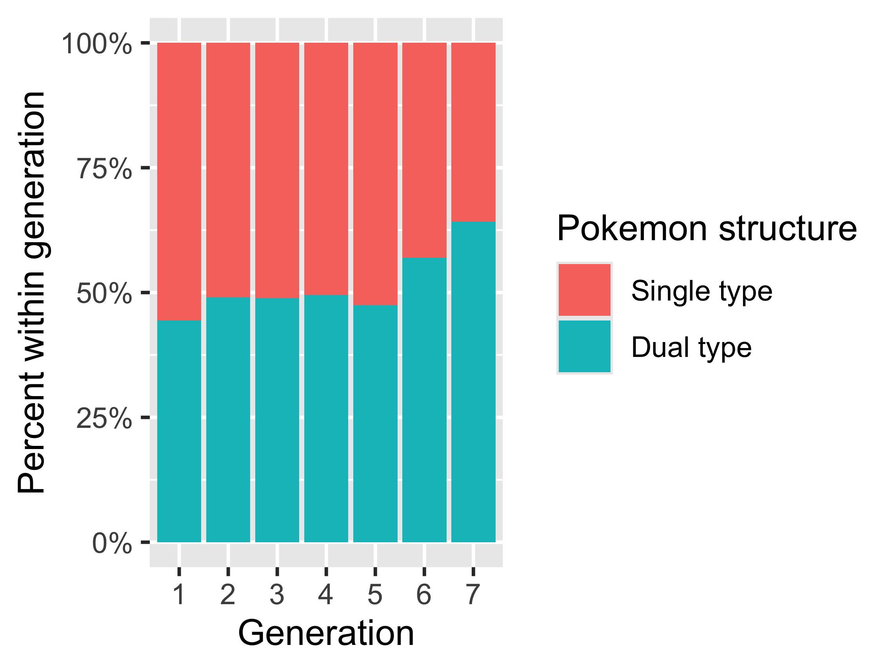
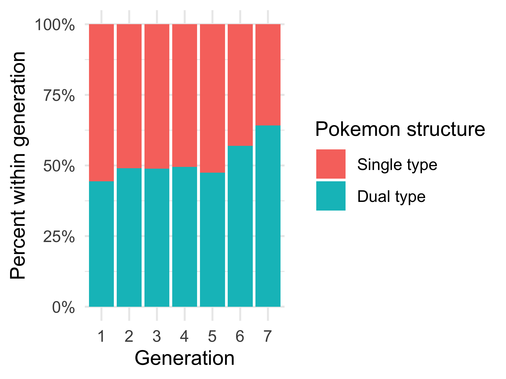

Concepts Across Units
Programming first, then one statistical idea per unit
- tidyverse from the first chunk
- Units 1 and 2: R crash course
- 13 of 19 early ideas recur in every unit
7 core units
- Foundations in R, Quarto,and Tidy Data
- Variable Typesand Data Wrangling
- Categorical Dataand Bar Charts
- Continuous Dataand Distributions
- Uncertaintyand Comparing Groups
- Relationships BetweenContinuous Variables
- Free-ResponseText as Data

A workflow for data
- 1 Frame and read in
- 2 Wrangle and describe
- 3 Visualize
- 4 Test and interpret
Template students receive
Does single/dual-type composition vary across generations?
Run a chunk, then render after each small section.
Programming task, built in the guided tutorial
pokemon = pokemon_raw %>%
filter(!is.na(generation_id), !is.na(type_1)) %>%
mutate(
generation = factor(generation_id),
dual_type_status = if_else(
is.na(type_2), "Single type", "Dual type"),
dual_type_status = factor(dual_type_status,
levels = c("Single type", "Dual type")))
pokemon_dual_type_by_generation = pokemon %>%
count(generation, dual_type_status)
pokemon_dual_type_by_generation# Counts from the previous chunk
pokemon_dual_type_by_generation %>%
ggplot(aes(x = generation, y = n,
fill = dual_type_status)) +
geom_col(position = "fill") +
scale_y_continuous(labels = scales::percent_format()) +
labs(x = "Generation", y = "Percent within generation",
fill = "Pokemon structure")# Counts from the previous chunk
pokemon_dual_type_by_generation %>%
ggplot(aes(x = generation, y = n,
fill = dual_type_status)) +
geom_col(position = "fill") +
scale_y_continuous(labels = scales::percent_format()) +
labs(x = "Generation", y = "Percent within generation",
fill = "Pokemon structure") +
theme_minimal()1 Frame and read in
Rows: 949
Columns: 4
$ pokemon <chr> "bulbasaur", "ivysau…
$ generation_id <dbl> 1, 1, 1, 1, 1, 1, 1,…
$ type_1 <chr> "grass", "grass", "g…
$ type_2 <chr> "poison", "poison", …Which variables answer the question? What does one row represent?
2 Wrangle and describe
# A tibble: 14 × 3
generation dual_type_status n
<fct> <fct> <int>
1 1 Single type 84
2 1 Dual type 67
3 2 Single type 51
4 2 Dual type 49
5 3 Single type 69
6 3 Dual type 66
7 4 Single type 54
8 4 Dual type 53
9 5 Single type 82
10 5 Dual type 74
11 6 Single type 31
12 6 Dual type 41
13 7 Single type 29
14 7 Dual type 52Create the categories, then count each generation/type combination.
3 Visualize: data and mappings

aes() maps variables to visual roles. A geom will draw the data.
3 Visualize: count bars

geom_col() draws bars from n. The default stacks the type counts.
3 Visualize: proportions

position = "fill" divides each count by its generation’s total.
3 Visualize: percent ticks

scale_y_continuous() formats the ticks. The values stay the same.
3 Visualize: readable labels

labs() names the axes and legend for the reader.
3 Visualize: minimal theme

theme_minimal() changes the appearance. The data and bars stay the same.
4 Test and interpret

χ²(6) = 10.36, p = .110
Interpretation task, from the tutorial
What is the null hypothesis? Does the test result match the pattern in the plot?